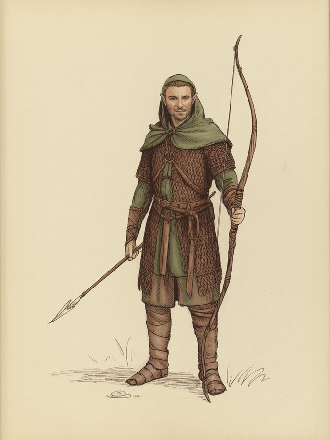

The great wood east of Anduin; the king's cave-halls on the Forest River (doors of stone, magic-shut), the enchanted stream, the elf-path — the Hobbit's whole middle landscape.a
Its governance
Sindarin kingship over a Silvan people ('more dangerous and less wise' says the Hobbit's narrator of Wood-elves generally); feasting-court in the wood; a working dungeon-and-key state apparatus, as Thorin's company learned.b
Its living
The one Elvish realm with fully described trade: wine and goods up the Forest River from Esgaroth by barrel — 'the wine... came from far away'; toll-and-portage economy with the Lake-men.c
Whose hand
GENERATED — Ideogram V3, driven by a prompt written in this archive (map/run_artifacts.py posts to api.ideogram.ai). NO ILLUSTRATOR DREW IT and it must never be presented as though one had. Ruling 3 asks for the hand and this IS the hand: 'generated' is an answer where 'unknown' would not be.d
What the corpus says
“descent (as was the realm of Thranduil in the northern parts of Mirkwood; though whether”e
“came to Galadriel, who dwelt now under the trees of Greenwood the Great; and they had”f
“Lórien and the Woodland Realm, but they were defeated. After the fall”g
a The archive's reading — [I-H]
b The archive's reading — [C]
c The archive's reading — [C]
d The ruling — the owner's ruling of 13 August 2026 on the generated images: 'we are free to use them'. That settles the LICENCE. It does not settle the HAND, which is recorded above as what it is — a permission to USE is not a permission to MISATTRIBUTE. [C]
e The text — Unfinished Tales of Numenor and Middle Earth · l.7693[C]
f The text — Unfinished Tales of Numenor and Middle Earth · l.7899[C]
g The text — The Complete Guide to Middle Earth · l.3754[EXT]
☞AG·vijThe
A triskele boss — the archive's own hand
Volume I · Realmscclxiv
◌
The name stands in 1,342 cited lines, in 94 of the corpus's 192 texts — most often in The History of the Hobbit (198), The Lord of the Rings a Reader's Companion (111), The Complete Guide to Middle Earth (78).h
The drafts against the published text
210 cited lines stand in 11 volumes of the drafts and 319 in 11 of the published books — the published text carries it more often than the drafts did.i

The archive's second drawing of The Woodland Realm
“‘No,’ said Aragorn. ‘One only of us is an Elf, Legolas from the” — the name is near this line and the archive does not assert that it is this record.l
Named in the same lines
Thranduil (39), Bilbo Baggins (25), Legolas (23), Irmo (Lórien) (20) — a shared line is a fact about the line, not a claim that the two met.m
counted from corpus lines that name BOTH records. A shared line is a fact about the line, not a claim that the two met; `eg` names a line a reader can open. [C]
What was looked for and not found
a marginal hand recording a change to this record — searched over 59 verified notes in site/arda_hands.json, and nothing was found.n
What was looked for and not found
a concordance headword bound to this route — searched over 937 headwords in site/arda_concordance.json, and nothing was found.o
Sindarin kingship over a Silvan people ('more dangerous and less wise' says the Hobbit's narrator of Wood-elves generally); feasting-court in the wood; a working dungeon-and-key state apparatus, as Thorin's company learned.